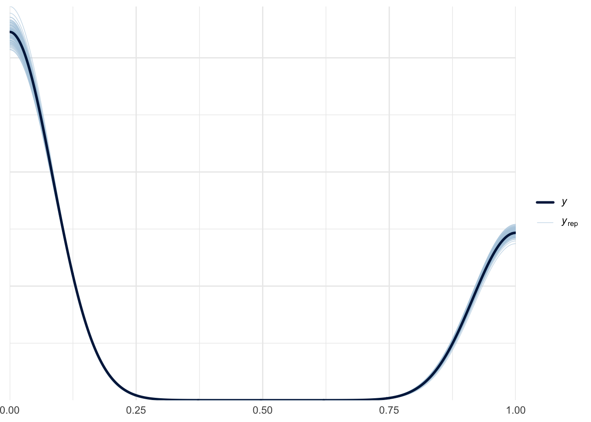
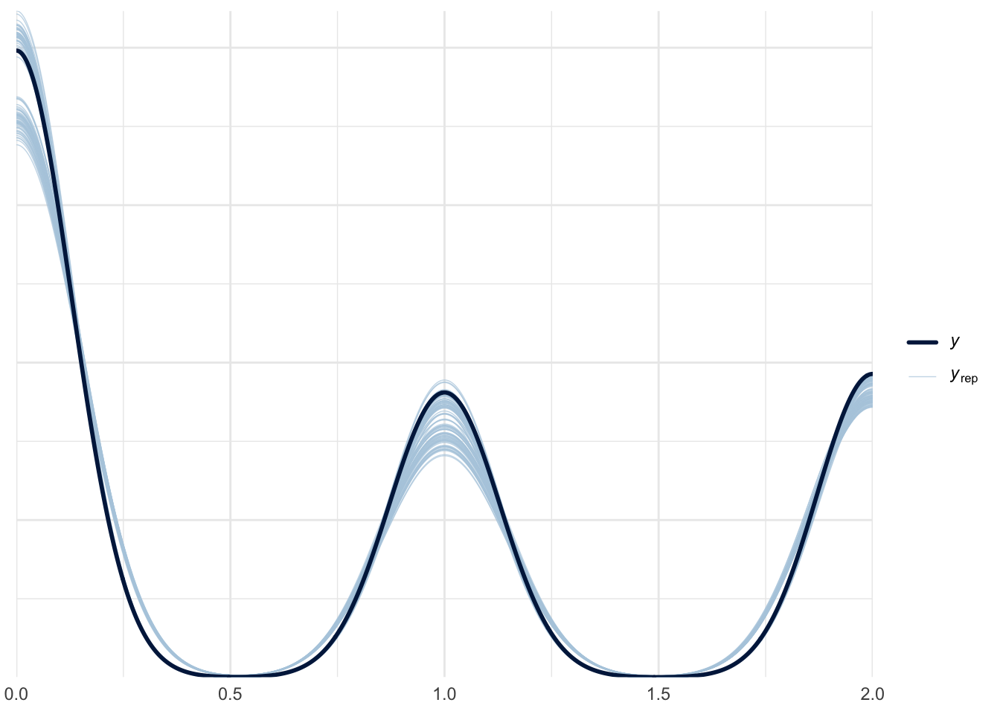

Packages Loaded
library(tidyverse)
library(brms)
library(tidybayes)
library(marginaleffects)
library(unvotes)
library(ggdist)
theme_set(theme_minimal())When do you use a probit model in statistics? When you have some data and want to probe it for answers!
It is also a method for modeling a data generating process which results in a binary 0/1 outcome. Maybe you are trying to explain whether someone votes in a particular election, whether a web user clicks on a link, or whether writing statistics blog posts helps its author get a job. Probit models are closely related to their more popular cousin: the logistic, or logit regression. So closely related, in fact, that I can’t think of any decisive reason why someone would choose one over the other. I like probit regression because I always aspire to maintain a high level of statistical probity in my work. In this post I am going to explain what a probit model is, how to fit one in R, and introduce a brand new nested hurdle probit model.
What is a Probit Model?
As I mentioned before, we can use a probit model when the outcome of interest is some binary variable. Binary outcomes arise out of what’s known as a Bernoulli distribution, which we write as:
\[ y_i \sim \text{Bernoulli}(p_i) \]
The \(y_i\) above stands for the observed 1’s and 0’s in our data, and the \(p_i\) is the probability of a particular \(y_i\) equaling 1. For example, the heads (1) and tails (0) we observe from flipping a coin repeatedly would be generated from a Bernoulli distribution with \(p_i = 0.5\). We know that \(p_i = 0.5\) in the coin flipping example because we have no information that could lead us to expect one outcome over another—hence a 50/50 probability of getting heads. For more complicated data generating processes, however, we don’t know \(p_i\) in advance. Instead, we use statistical models to rank the relative plausibility of every possible value of \(p_i\) based on the data we have collected. The general term for this sort of procedure is called Bayesian updating.
How do we go about constructing plausibility rankings for \(p_i\)? This is where our probit (probability unit) model comes in. Say we have a number of observed variables, \(X_{1i}, X_{2i}, X_{3i}\) whose linear combination we think affects whether \(y_i = 1\) or \(y_i = 0\) (in other words, \(p_i\)). In this case we would like to use an equation that looks like:
\[ p_i = \beta_0 + \beta_1X_{1i} + \beta_2X_{2i} + \beta_3X_{3i} \]
Here the \(\beta\) terms represent the marginal effect each of the \(X\) variables has on \(p_i\). But wait! We defined \(p_i\) earlier as a probability value‚Äîa real number between 0 and 1. The Bernoulli distribution can‚Äôt give us values for \(y_i\) if \(p_i\) is not a valid probability. There is nothing in the equation above that enforces the value of the right hand side, \(\beta_0 + \beta_1X_{1i} + \beta_2X_{2i} + \beta_3X_{3i}\) to be between 0 and 1 üôÅ. Luckily there is a little guy known as \(\Phi\) who is ready to come to our rescue. We simply wrap our right-hand expression in \(\Phi\)‚Äôs loving embrace and it takes care of transforming the value of these linear predictors to a value on the probability scale of \(p_i\):
\[ p_i = \Phi(\beta_0 + \beta_1X_{1i} + \beta_2X_{2i} + \beta_3X_{3i}) \]
What is \(\Phi\) and how does it work? It represents the cumulative distribution function (CDF) for a standard Normal distribution, which means that it takes as input any real number and gives you back the probability of getting that value or less out of a standard Normal distribution.1 The graph below shows what this function looks like.
ggplot() +
stat_function(fun = pnorm, # pnorm is the Normal CDF function in R
xlim = c(-4, 4)) +
geom_segment(aes(x = 1.5, xend = 1.5, y = 0, yend = pnorm(1.5)),
color = "red", linetype = "dashed") +
geom_segment(aes(x = -4, xend = 1.5, y = pnorm(1.5), yend = pnorm(1.5)),
color = "red", linetype = "dashed") +
scale_x_continuous(breaks = seq(-4, 4, by = .5)) +
scale_y_continuous(breaks = seq(0, 1, by = .1)) +
labs(title = "Standard Normal CDF",
x = "X",
y = "Cumulative Probability")
If we supply \(\Phi\) with an input of 1.5, it gives us an output of 0.93.
The standard Normal CDF’s ability to turn any real number into a probability between 0 and 1 is what allows us to build a model for \(p_i\), which then tells us something about the Bernoulli distributions which produced our binary outcome variable \(y_i\). As an aside, the difference between probit and logit models comes down to how they transform the linear predictor to the probability scale. Probit uses \(\Phi\) and logit uses the log-odds transformation.2 This changes the scale of the \(\beta\) parameters, and therefore how to interpret their values plus informing us about what prior values we should assign, but otherwise the two models are the same.
The Probit Model in Action
Let’s jump into some real data to check out the probit model in action. We’re going to use data from the United Nations General Assembly Voting Data R package3 which contains information about how each country voted on particular UN resolutions. Our goal is to build a model which predicts how the United States votes on each resolution.
un <- un_votes |>
left_join(un_roll_call_issues, by = "rcid") |>
left_join(un_roll_calls, by = "rcid") |>
mutate(vote = case_when(vote == "yes" ~ 1,
vote == "no" ~ 0,
vote == "abstain" ~ 2))The first step will be to join the three data sets in the unvotes package together so that we have all the possible variables at our disposal. In order to make our lives easier during the modeling steps we need to recode the outcome variable, vote, such that it takes numeric values: “yes” = 1, “no” = 0, and “abstain” = 2. The basic probit model can only handle binary outcome variables, so we will ignore abstentions for the time being.
un <- un |>
group_by(rcid) |>
mutate(ussr_vote = ifelse(any(country_code == "RU" & vote == 1), 1, 0)) |>
ungroup() |>
mutate(issue = ifelse(is.na(issue), "Other", as.character(issue))) |>
filter(country_code == "US",
date < as.Date("1991-12-26"))Next, let’s assemble our predictor variables. Now I’m no international relations expert, but I conjecture that one of the best ways to predict how the US will vote on a resolution is by looking at how its longtime foe the USSR voted. Naturally this limits our analysis to the time period before Christmas day 1991—which calls into question our use of the word “prediction”. What does it mean to predict events which took place over 30 years ago? Let’s overlook this detail for the sake of exposition.
In addition to a variable for how the USSR voted on resolutions, we will include a variable in the model for the issue, or topic, of each resolution. I created a new category called “Other” which contains resolutions with missing NA issues so that these observations are still included in the analysis.
un |>
janitor::tabyl(issue) issue n percent
Arms control and disarmament 512 0.11377778
Colonialism 616 0.13688889
Economic development 514 0.11422222
Human rights 438 0.09733333
Nuclear weapons and nuclear material 409 0.09088889
Other 1478 0.32844444
Palestinian conflict 533 0.11844444Now we can finally fit our model! This is a very simple probit regression so we can use the brms R package. Because all our predictor variables are categorical, we’ll use the 0 + ... formula syntax for index coding. The code prior(normal(0, 2), class = b) sets weakly informative priors for the coefficients on all these variables (notice how on the standard Normal CDF graph above almost all the probability changes occur between the values -2 and 2). We also need to include bernoulli(link = "probit") to ensure that brm() knows we want to run a probit model.
fit_probit <- brm(
bf(vote ~ 0 + issue + ussr_vote),
prior = prior(normal(0, 2), class = b),
family = bernoulli(link = "probit"),
data = un |> filter(vote != 2), # Getting rid of abstentions
cores = 4,
chains = 4,
backend = "cmdstanr",
silent = 2,
refresh = 0
)Let’s run a quick posterior-predictive check to make sure there are no glaring issues with our model. The \(y\) line in the graph below shows the actual distribution of 1’s and 0’s in our data, and the \(y_{rep}\) lines show different draws from the posterior predictive distribution.
pp_check(fit_probit, ndraws = 100)Loading required package: rstanLoading required package: StanHeaders
rstan version 2.35.0.9000 (Stan version 2.35.0)For execution on a local, multicore CPU with excess RAM we recommend calling
options(mc.cores = parallel::detectCores()).
To avoid recompilation of unchanged Stan programs, we recommend calling
rstan_options(auto_write = TRUE)
For within-chain threading using `reduce_sum()` or `map_rect()` Stan functions,
change `threads_per_chain` option:
rstan_options(threads_per_chain = 1)
Attaching package: 'rstan'The following object is masked from 'package:tidyr':
extract
Nice—the model is able to generally predict the 1’s and 0’s it was trained on.
Two Probit to Quit
Now that we’re probit model experts, let’s try something a little more interesting. Remember those abstentions we left out of the previous model? It’s time to add them back in.
There are multiple ways to construct a model with three possible outcomes (yes, no, abstain), but one of the most intuitive is to add a hurdle process to our original probit model. A hurdle model has two parts: first, we model whether some event will take place or not, then, conditional on the event taking place (i.e. overcoming the hurdle), we model the outcome of the event. So in our United Nations resolution example, the hurdle in question is whether a country takes any vote or abstains from voting. Then, if we predict that the country votes at all, we subsequently predict whether it will vote “yes” or “no” on the resolution.
We’ve covered how to model whether a country will vote “yes” or “no”, but how do we model whether a country votes or abstains? The decision whether to vote or not to vote is itself a binary outcome—so we get to use the probit model once again! Two probits in one model! I’m still trying to come up with a catchy name for this type of hurdle probit model—ChatGPT was not much help:
Q: What would be a catchy name for a hurdle probit model?
A: How about “Trippy Hurdle Probit”? It combines the idea of a challenging hurdle with a humorous twist, suggesting that the model might encounter some unconventional obstacles along the way.
Unsurprisingly there is no “trippy hurdle probit” regression family in brms. Luckily brms allows you to create your own model families using the custom_family() function. The code for this section was adapted from these two great resources on custom families in brms: Andrew Heiss’s blog, and brms package vignette.
hurdle_probit <- custom_family(
"hurdle_probit",
dpars = c("mu", "theta"),
links = c("identity", "probit"),
type = "int")First we define a custom_family() with two distributional parameters, or dpars. The mu parameter corresponds to the yes/no part of the model and theta corresponds to the hurdle part. Unlike “mu” (which is required from brms), there is nothing special about choosing the label “theta” here. We’re just following some common notation.
stan_funs <- "
real hurdle_probit_lpmf(int y, real mu, real theta) {
if (y == 2) {
return bernoulli_lpmf(1 | theta);
} else {
return bernoulli_lpmf(0 | theta) +
bernoulli_lpmf(y | Phi(mu));
}
}
"
stanvars <- stanvar(scode = stan_funs, block = "functions")Next we need to write a new Stan function for brms to use. Note the conditional statement y == 2 which corresponds to an abstention in our original data.
When building a new, and more complicated model like this it is a good idea to run a quick simulation to ensure things are working as expected. Our goal here is to determine whether the model can recover the same parameters we used to generate a synthetic data set. In the simulation code below, these parameters correspond to x_coef and z_coef.
N <- 1000
x_coef <- -1
z_coef <- 2
hurdle_sim_data <- tibble(
x = rnorm(N), # random variable affecting yes/no
z = rnorm(N) # random variable affecting hurdle
) |>
mutate(pr_abstain = pnorm(z * z_coef), # probability of voting or abstaining
abstain = rbinom(n(), 1, prob = pr_abstain), # binary abstain/vote
pr_yes = pnorm(x * x_coef), # probability of yes or no
yes = rbinom(n(), 1, prob = pr_yes), # binary yes/no
y = case_when(abstain == 1 ~ 2, # final realized outcome
yes == 1 ~ 1,
yes == 0 ~ 0))The synthetic data hurdle_sim_data can now be fed into a model using the custom family we created above.
fit_sim <- brm(
bf(y ~ x, # yes/no part
theta ~ z), # hurdle part
prior = prior(normal(0, 2), class = b, coef = x) +
prior(normal(0, 2), class = b, coef = z, dpar = theta),
data = hurdle_sim_data,
family = hurdle_probit, # the custom_family we made
stanvars = stanvars, # the Stan function we made
backend = "cmdstanr",
chains = 4,
cores = 4,
silent = 2,
refresh = 0
)fixef(fit_sim) Estimate Est.Error Q2.5 Q97.5
Intercept 0.082220483 0.06577341 -0.0486303 0.2097614
theta_Intercept 0.002906429 0.05496474 -0.1094893 0.1081701
x -0.946318009 0.08479010 -1.1150805 -0.7863664
theta_z 1.988965247 0.11649643 1.7666708 2.2218023Taking a look at the coefficient estimates from our simulation model we see that we get roughly the same values as those that were used to generate the synthetic data! And just to further tie everything together, we can separate the two parts of the full hurdle model out and check the results.
# Using maximum likelihood here to save time
glm(abstain ~ z,
data = hurdle_sim_data,
family = binomial(link = "probit")) |>
broom::tidy()# A tibble: 2 × 5
term estimate std.error statistic p.value
<chr> <dbl> <dbl> <dbl> <dbl>
1 (Intercept) 0.107 0.0547 1.96 4.96e- 2
2 z 1.94 0.113 17.2 2.15e-66Above we see the effect of z on whether an observation in our simulated data was marked “abstain” or not. Note that the coefficient estimate is the same as theta_z in the full hurdle model above.
glm(yes ~ x,
data = hurdle_sim_data |> filter(abstain == 0),
family = binomial(link = "probit")) |>
broom::tidy()# A tibble: 2 × 5
term estimate std.error statistic p.value
<chr> <dbl> <dbl> <dbl> <dbl>
1 (Intercept) 0.0413 0.0677 0.610 5.42e- 1
2 x -1.06 0.0936 -11.3 1.34e-29And here we see the effect of x on the realized outcome y in the simulated data (after excluding the abstentions). Again, the coefficient estimate in this model nicely replicates the x estimate from the full hurdle model above.
Now that we’re confident the hurdle probit model is working as intended, we can fit it to the real-world UN data we prepared earlier. We’ll keep the part of the model predicting yes/no votes the same (i.e. using resolution issue and USSR vote variables as predictors). How should we predict whether the US votes or abstains from a particular resolution? Luckily for us, the unvotes data comes with a variable importantvote. Again, I’m no international relations expert but maybe if a resolution is deemed to be “important” the US will be more likely to weigh in—for or against.
fit_hurdle <- brm(
bf(vote ~ 0 + issue + ussr_vote, # yes/no model
theta ~ importantvote), # abstain/vote model
family = hurdle_probit,
stanvars = stanvars,
data = un,
cores = 4,
chains = 4,
backend = "cmdstanr",
silent = 2,
refresh = 0
)Generating draws from the posterior predictive distribution from a custom family model in brms requires another user-defined function. This vignette helps us out with this once again.
posterior_predict_hurdle_probit <- function(i, prep, ...) {
mu <- brms::get_dpar(prep, "mu", i = i)
theta <- brms::get_dpar(prep, "theta", i = i)
hu <- runif(prep$ndraws, 0, 1)
ifelse(hu < theta, 2, rbinom(prep$ndraws, 1, pnorm(mu)))
}Now we can check our results using pp_check()
pp_check(fit_hurdle, ndraws = 100)
We see that the model does an okay job recovering the 0’s (no), 1’s (yes), and 2’s (abstain) from the original data.
Concluding Thoughts
If you’re tackling a data problem involving binary outcomes and aiming to explicitly model abstentions, consider taking the trippy hurdle probit model for a spin.
sessionInfo()R version 4.4.0 (2024-04-24)
Platform: aarch64-apple-darwin20
Running under: macOS Sonoma 14.3
Matrix products: default
BLAS: /Library/Frameworks/R.framework/Versions/4.4-arm64/Resources/lib/libRblas.0.dylib
LAPACK: /Library/Frameworks/R.framework/Versions/4.4-arm64/Resources/lib/libRlapack.dylib; LAPACK version 3.12.0
locale:
[1] en_US.UTF-8/en_US.UTF-8/en_US.UTF-8/C/en_US.UTF-8/en_US.UTF-8
time zone: America/Los_Angeles
tzcode source: internal
attached base packages:
[1] stats graphics grDevices utils datasets methods base
other attached packages:
[1] rstan_2.35.0.9000 StanHeaders_2.35.0.9000 ggdist_3.3.2
[4] unvotes_0.3.0 marginaleffects_0.22.0 tidybayes_3.0.6
[7] brms_2.21.6 Rcpp_1.0.12 lubridate_1.9.3
[10] forcats_1.0.0 stringr_1.5.1 dplyr_1.1.4
[13] purrr_1.0.2 readr_2.1.5 tidyr_1.3.1
[16] tibble_3.2.1 ggplot2_3.5.1 tidyverse_2.0.0
loaded via a namespace (and not attached):
[1] svUnit_1.0.6 tidyselect_1.2.1 farver_2.1.2
[4] loo_2.8.0.9000 fastmap_1.1.1 tensorA_0.36.2.1
[7] janitor_2.2.0 digest_0.6.36 timechange_0.3.0
[10] lifecycle_1.0.4 processx_3.8.4 magrittr_2.0.3
[13] posterior_1.6.0 compiler_4.4.0 rlang_1.1.4
[16] tools_4.4.0 utf8_1.2.4 yaml_2.3.8
[19] data.table_1.15.4 knitr_1.47 labeling_0.4.3
[22] bridgesampling_1.1-2 htmlwidgets_1.6.4 pkgbuild_1.4.4
[25] curl_5.2.1 plyr_1.8.9 cmdstanr_0.8.0.9000
[28] abind_1.4-5 withr_3.0.0 grid_4.4.0
[31] stats4_4.4.0 fansi_1.0.6 colorspace_2.1-0
[34] inline_0.3.19 scales_1.3.0 cli_3.6.3
[37] mvtnorm_1.2-5 rmarkdown_2.26 generics_0.1.3
[40] RcppParallel_5.1.8 rstudioapi_0.16.0 reshape2_1.4.4
[43] tzdb_0.4.0 bayesplot_1.11.1.9000 parallel_4.4.0
[46] matrixStats_1.3.0 vctrs_0.6.5 V8_4.4.2
[49] Matrix_1.7-0 jsonlite_1.8.8 hms_1.1.3
[52] arrayhelpers_1.1-0 glue_1.7.0 codetools_0.2-20
[55] ps_1.7.7 distributional_0.4.0 stringi_1.8.4
[58] gtable_0.3.5 QuickJSR_1.3.0 munsell_0.5.1
[61] pillar_1.9.0 htmltools_0.5.8.1 Brobdingnag_1.2-9
[64] R6_2.5.1 evaluate_0.23 lattice_0.22-6
[67] backports_1.5.0 broom_1.0.5 snakecase_0.11.1
[70] rstantools_2.4.0.9000 coda_0.19-4.1 gridExtra_2.3
[73] nlme_3.1-164 checkmate_2.3.1 xfun_0.44
[76] pkgconfig_2.0.3 Footnotes
The standard Normal distribution is a Normal distribution with mean 0 and standard deviation 1.↩︎
\(\text{ln}\left(\frac{x}{1-x}\right)\)↩︎
Erik Voeten “Data and Analyses of Voting in the UN General Assembly” Routledge Handbook of International Organization, edited by Bob Reinalda (published May 27, 2013)↩︎